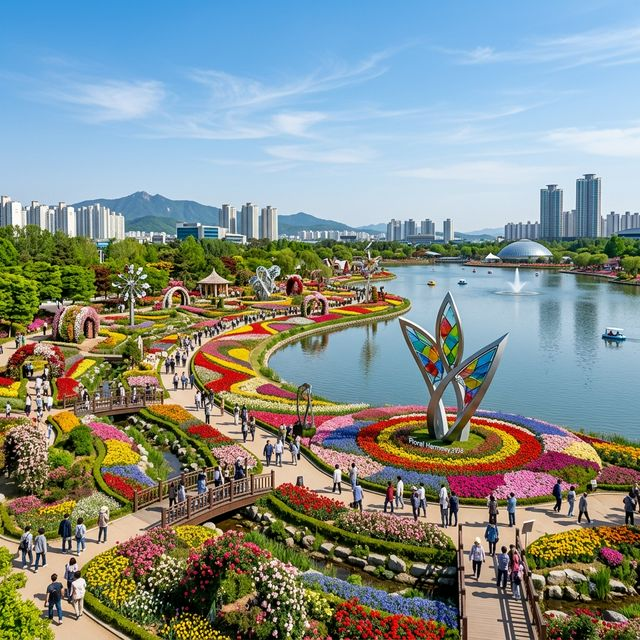
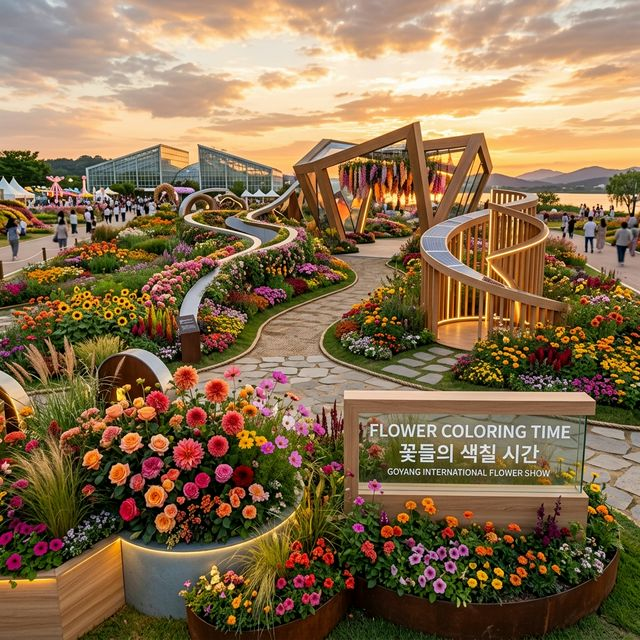
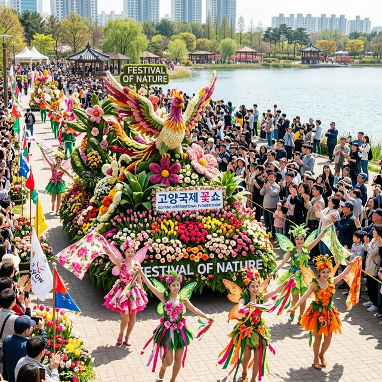

올해로 제17회를 맞이하는 고양국제꽃박람회는 국내를 넘어 아시아를 대표하는 화훼 전문 박람회로 자리 잡았습니다. 2026년의 공식 슬로건인 '꽃, 시간을
물들이다'는 꽃이 피고 지는 자연의 섭리를 인간의 역사와 삶의 조각들에 투영하여 예술적으로 승화시킨다는 심오한 뜻을 담고 있습니다. 일산호수공원의 광활한 부지가 말 그대로 꽃의
바다로 변하는 장관을 목격하실 수 있을 것입니다.
축제장은 실내 전시관과 야외 테마 정원으로 나뉘어 운영되는데, 특히 올해는 지속 가능한 정원 문화를 확산시키기 위한 에코 가드닝 섹터가 대폭 강화되었습니다. 단순히 꽃을
구경하는 것을 넘어, 기후 위기 시대에 정원이 우리에게 주는 위로와 가치를 재조명하는 뜻깊은 자리가 될 예정입니다. 가족, 연인, 혹은 홀로 출사를 나오는 모든 분에게 잊지 못할 봄의 기억을 선사할
최적의 장소입니다.
전시 기간은 4월 24일 금요일부터 5월 10일 일요일까지 총 17일간이며, 관람 시간은 오전 9시부터 오후 7시까지로 넉넉하게 편성되었습니다. 다만, 워낙 볼거리가 많아
호수공원을 한 바퀴 도는 데만도 반나절 이상이 소요되므로 가급적 평일 오전 시간대를 공략하시길 추천드립니다.

일산호수공원을 따라 화려하게 펼쳐진 2026 고양국제꽃박람회 야외 전시장 전경 — AI 제작 이미지
이번 박람회에서 가장 공을 들인 구역은 단연 '국제 정원 박람회 존'입니다. 영국, 네덜란드, 프랑스 등 정원 문화의 본고장들을 포함한 총 30개국의 정원 디자이너들이
협업하여 각국의 고유한 미학을 꽃으로 표현해냈습니다. 특히 네덜란드의 튤립 정원은 올해 '오렌지 로드'라는 특별 섹션을 통해 수십만 송이의 튤립이 물결치는 장관을 연출할
예정입니다.
한국의 미를 강조한 'K-가든' 섹션도 주목해야 합니다. 전통 가옥의 차경 원리를 이용해 호수공원의 자연경관을 정원 안으로 끌어들인 디자인은 외국인 관광객들에게도 찬사를
받을 만큼 정교합니다. 이곳에서는 한국 자생화와 야생화를 활용한 절제된 아름다움을 만끽할 수 있으며, 고요한 연못과 정자가 어우러진 공간에서 잠시 쉬어가는 여유를 가질 수 있습니다.
또한, 올해 새롭게 선보이는 '언더워터 플로라(Underwater Flora)'는 수생 식물과 육상 꽃들을 결합한 혁신적인 수중 정원 전시입니다. 투명한 대형 수조 안에서
피어난 꽃들이 호수의 물결과 반응하여 몽환적인 분위기를 자아내는데, 이곳은 소셜 미디어를 위한 최고의 포토존이 될 것으로 확신합니다. 카메라 셔터를 멈추기 힘든 매혹적인 풍경이 전역에 펼쳐져 있습니다.
야외가 화려함의 극치라면, 실내 전시관인 '꽃 박람회 가든 센터'는 화훼 산업의 미래를 엿볼 수 있는 고밀도 정보의 장입니다. 인공지능(AI)이 관리하는 스마트 팜 기술을
정원에 접목한 '스마트 가드닝' 전시는 바쁜 현대인들이 실내에서도 손쉽게 녹색 삶을 영위할 수 있는 솔루션을 제공합니다. 수직 정원(Vertical Garden)과 자동
급수 시스템이 결합된 형태의 전시물들은 관람객들의 큰 호응을 얻고 있습니다.
지속 가능성을 주제로 한 '업사이클링 가든' 섹터도 인상적입니다. 버려진 폐자재와 일상 소품들을 활용해 예술적인 화분과 정원 오브제를 만들어낸 이 공간은 아이들에게 환경
보호의 중요성을 가르치는 훌륭한 교육의 장이 되기도 합니다. 환경 오염에 대한 경각심을 일깨우면서도 미적인 감각을 잃지 않은 작가들의 창의력이 돋보이는 구역입니다.
더불어 전 세계 희귀 식물들을 한데 모은 '세계 희귀 꽃 전시관'은 박람회에서만 볼 수 있는 귀한 볼거리입니다. 평소 접하기 힘든 신비로운 색채와 모양을 가진 꽃들이
철저한 온도와 습도 제어 하에 전시되고 있으며, 전문 큐레이터의 설명이 곁들여져 이해를 돕습니다. 이곳은 고밀도 정보가 집약된 핵심 구역이므로 천천히 시간을 두고 둘러보시길 권장합니다.

'꽃, 시간을 물들이다' 테마를 형상화한 매혹적인 정원 조형물과 꽃들의 조화 — AI 제작 이미지
고양국제꽃박람회의 백미는 오감을 자극하는 '플라워 퍼레이드'입니다. 꽃으로 장식된 거대한 플로트 카와 화려한 의상을 입은 공연단이 호수공원 산책로를 따라 행진하는 모습은
마치 동화 속 한 장면을 연상시킵니다. 퍼레이드는 주말과 공휴일 오후 2시와 4시, 1일 2회 차로 운영되며 약 30분간 진행됩니다. 퍼레이드 경로를 미리 확인하여 그늘진 명당에 자리를 잡는 것이
중요합니다.
수상 분수 광장에서 펼쳐지는 '수상 플라워 매직 쇼'도 놓칠 수 없는 볼거리입니다. 호수 위에서 뿜어져 나오는 시원한 물줄기와 레이저, 그리고 불꽃이 어우러지는 특수
효과는 야간 관람의 묘미를 더해줍니다. 2026년에는 공연 규모가 더욱 확대되어 서커스와 뮤지컬 요소를 결합한 융복합 퍼포먼스를 선보인다고 하니 기대하셔도 좋습니다.
공연은 단순히 보는 것에 그치지 않고 관람객이 직접 참여하는 플라워 댄스 챌린지나 꽃 팔찌 만들기 체험 등 참여형 프로그램으로 연장됩니다. 축제장 곳곳에서 버스킹 공연과
마술 쇼가 상시 진행되어 이동하는 발걸음마다 즐거움이 가득합니다. 공식 리플렛이나 앱을 통해 당일 공연 시간을 수시로 확인하여 알찬 관람 동선을 짜보시기 바랍니다.
합리적인 관람을 위해 입장료 및 할인 체계를 숙지하는 것은 필수입니다. 2026년 입장권 기준, 현장 판매 일반권은 15,000원이지만,
행사 시작 전까지 진행되는 사전 예매를 이용하면 11,000원에 구매가 가능합니다. 무려 27% 수준의 높은 할인율이 적용되므로 방문 계획이 있다면 반드시 온라인 예매를
먼저 진행하시길 권장합니다.
고양시민이라면 더욱 파격적인 혜택이 주어집니다. 신분증을 지참한 고양시 거주자에게는 상시 할인이 적용되어 지역 축제로서의 친밀도를 높이고 있습니다. 또한 만 65세 이상 어르신, 장애인, 국가유공자 등
법적 할인 대상자분들은 관련 증명서를 지참하시면 현장에서 즉시 감면 혜택을 받으실 수 있습니다. 단, 중복 할인은 불가하므로 본인에게 가장 유리한 조건을 선택해야 합니다.
특히 주목할 점은 '그린 패스(Green Pass)' 할인입니다. 탄소 중립 실천의 일환으로 지하철이나 버스 등 대중교통을 이용하여 방문한 기후 동행 카드
소지자나 교통카드 사용자에게는 현장 권종에서 추가 할인이 제공되는 제도를 운용 중입니다. 환경도 보호하고 지갑도 지킬 수 있는 일석이조의 혜택을 놓치지 마세요.
| 구분 | 현장 판매 | 사전 예매 (-4/23) |
|---|---|---|
| 일반 (성인) | 15,000원 | 11,000원 |
| 특별할인 (초중고/어르신) | 12,000원 | 9,000원 |
| 대중교통 이용 할인 | 현장 확인 시 3,000원 추가 할인 (중복불가) | |
일산호수공원은 접근성이 뛰어난 곳이지만 축제 기간의 교통 체증은 악명이 높습니다. 가장 추천하는 방법은 지하철 3호선을 이용해 정발산역에서 하차하는 것입니다. 1번 또는
2번 출구로 나오면 도보 10분 내외로 축제 메인 게이트에 도착할 수 있습니다. 역에서 행사장까지 가는 길에도 꽃 장식과 안내 배너가 설치되어 있어 즐거운 발걸음이 이어집니다.
2026년에 가장 변화된 점은 바로 GTX-A 노선 운행입니다. 서울역이나 삼성역 방향에서 오시는 분들은 GTX-A를 이용해 킨텍스역에서
하차한 뒤 전용 셔틀버스를 이용하면 이동 시간을 획기적으로 단축할 수 있습니다. 킨텍스역 2번 출구에서 수시로 운행되는 꽃박람회 전용 셔틀은 행사장까지 약 15분 만에 연결해주어 장거리 관람객들의
편의를 돕습니다.
광역버스를 이용하실 경우 '일산동구청' 또는 '마두역' 정류장에서 하차하시면 됩니다. 서울 광화문, 신촌, 강남 등 주요 거점에서 출발하는 직행버스가 많아 편리하지만, 퇴근 시간대에는 자유로의 극심한
정체가 예상되므로 가급적 철도 교통을 우선순위에 두시기 바랍니다. 교통 체증으로 인한 관람 시간 손실을 최소화하는 것이 성공적인 여행의 시작입니다.
어린 자녀나 부모님과 함께여서 부득이하게 자차를 이용해야 한다면 주차 전쟁에 대비해야 합니다. 축제장 인근의 호수공원 상설 주차장은 오전 일찍 만차되는 경우가 허다하므로, 공식 운영되는
외곽 임시 주차장을 공략하는 것이 상책입니다. 대표적으로 장미 주차장과 선인장 주차장이 전 기간 무료 또는 저렴한 비용으로
운영됩니다.
내비게이션에 '고양국제꽃박람회 임시 주차장'을 검색하면 실시간 잔여 대수를 확인할 수 있는 시스템이 구축되어 있으므로 이동 중에 미리 체크하는 센스가 필요합니다. 주말이나
공휴일에는 인근 학교나 공공기관 부지가 추가 주차장으로 개방되니 안내 요원의 지시에 잘 따라주시기 바랍니다. 주차 구역번호를 미리 사진으로 찍어두어야 나중에 차를 찾는 수고를 덜 수
있습니다.
임시 주차장에서 행사장까지는 무료 셔틀버스가 7~10분 간격으로 순환 운행합니다. 셔틀버스는 휠체어와 유모차 탑승이 가능한 저상버스가 포함되어 있어 교통약자분들도 안심하고
이용하실 수 있습니다. 다만 행사 종료 직후인 오후 6시부터 7시 사이에는 셔틀 대기 줄이 매우 길어질 수 있으므로, 종료 30분 전이나 아예 1시간 후에 이동하는 전략이 필요합니다.

관람객들의 환호 속에 행진하는 꽃 박람회 플라워 퍼레이드 군단 — AI 제작 이미지
박람회 관람을 마친 후에도 즐거움은 계속됩니다. 행사장 바로 옆 노래하는 분수대는 일산의 자부심이라 불리는 명소입니다. 밤이 되면 웅장한 음악과 함께 화려한 조명 쇼가
펼쳐져 꽃 박람회의 감동을 한층 더 깊게 만들어줍니다. 분수 공연 시간표는 매월 변경되므로 고양도시관리공사 홈페이지에서 사전 확인은 필수입니다.
카페 투어를 즐기시는 분들에게는 인근 '일산 가로수길'과 '밤리단길'을 추천합니다. 이국적인 분위기의 테라스 카페와 개성 넘치는 로컬
맛집들이 즐비하여 박람회 관람으로 지친 다리를 쉬어가기에 최적입니다. 특히 꽃 박람회 기간에는 일부 매장에서 입장권을 제시하면 메뉴 할인을 제공하는 연계 이벤트도 진행하니 활용해 보시기
바랍니다.
또한, 호수공원 내 메타세쿼이아 길은 조용한 산책을 즐기기에 더할 나위 없는 코스입니다. 꽃의 화려함에서 잠시 벗어나 원시림 같은 울창한 나무 사이를 걸으며 피톤치드를
마시다 보면 복잡했던 마음까지 정화되는 기분을 느끼실 수 있습니다. 박람회장 내부의 열기와 호수공원 외부의 평온함을 동시에 누리는 완벽한 동선을 설계해 보세요.
마지막으로 쾌적한 관람을 위한 몇 가지 실무 팁을 드립니다. 박람회장은 그늘이 많지 않은 넓은 오픈 공간이므로 양산이나 모자, 선글라스는 필수 준비물입니다. 또한 1만 보
이상 걷게 될 확률이 매우 높으므로 발이 편한 런닝화나 워킹화를 착용하시는 것을 강력히 권장합니다. 예쁜 사진을 위해 불편한 구두를 신었다가는 관람 후반부에 큰 고생을 하실 수 있습니다.
식사는 가급적 행사장 외부 상권을 이용하시는 것이 퀄리티 면에서 유리합니다. 행사장 내 푸드코트도 구비되어 있으나 인파로 인해 대기 시간이 길고 가격이 다소 높게 책정되어 있습니다. 정발산역 인근의
라페스타나 웨스턴돔 지역에는 한식부터 양식까지 검증된 맛집들이 즐비하며, 축제 분위기를 온전히 즐길 수 있는 식당들이 많습니다.
사진 촬영의 골든 아워는 오후 4시에서 5시 사이입니다. 해가 뉘엿뉘엿 지기 시작하면서 일산호수의 수면에 햇살이 부서지는 '윤슬'과 꽃들이 어우러지는 시간대에 서쪽 하늘을
배경으로 셔터를 누르면 누구나 작가 못지않은 결과물을 얻을 수 있습니다. 삼각대 사용은 인파 밀집 지역에서는 제한될 수 있으니 셀카봉이나 휴대용 짐벌 등을 활용하시는 것이 좋습니다.